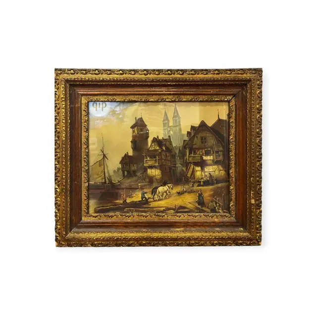
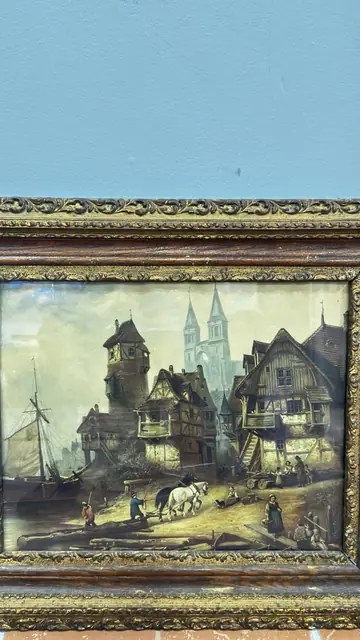
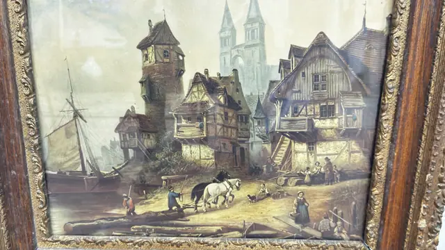

Paintings & Prints
Half-Timbered Riverside Town With Cathedral, Framed
· late 19th to early 20th century
Price Upon Request



About the Item
A busy 19th-century townscape: at left a masted barge lies at a quay while workmen roll logs ashore, and a pair of grey horses drags a timber sledge across the foreground. Behind them rise a slate-roofed stone tower and a tight row of half-timbered gabled houses with external stairs and balconies, with the twin openwork spires of a gothic cathedral in the pale distance. The palette is soft and aged: cream sky, ochre and umber timberwork, slate blues and a few red and blue accents on the small figures. Medium: colour print (chromolithograph/oleograph) on paper. Condition: Overall yellowing/darkening of the image, small dark flecks and surface soiling; gilding rubbed and chipped along the frame ornament, with losses at the corners.
Details
- Creation Year:
- late 19th to early 20th century
- Dimensions:
- Height: 25.0 in (63.5 cm)
Width: 28.25 in (71.75 cm)
outside of frame - Medium:
- colour print (chromolithograph/oleograph) on paper
- Period:
- 20Th
- Condition:
- Offered in the condition shown in the photographs.
- Reference Number:
- VO-214
- Documentation:
- no certificate present